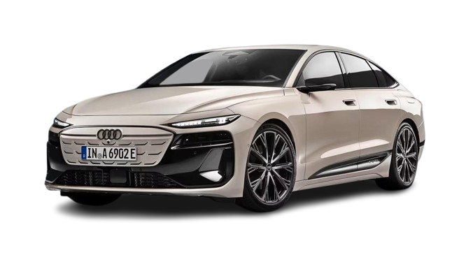

Utilización de css "Media queries"

Audi RS3
Audi a6 e-tron
Audi rs e-tron gt performance
Alpine a290
bmw m5
Coches nuevos en el mercado
Mira estos coches que han salido nuevos en el mercado en 2024, pincha en el coche que quieras ver.